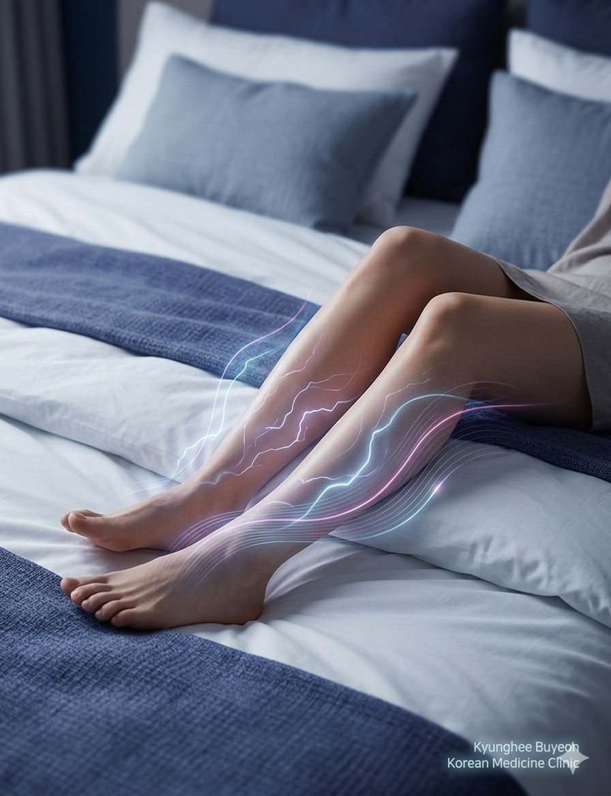

부작용 없는 근본치료로 편안함을 되찾으세요!

“ 주로 잠들기 전에 다리에 불편한 감각 증상이 심하게 나타나 다리를 움직이게 되면서 수면에 장애를 일으키는 질환입니다.
다리에 쥐가 나거나 통증이 발생하는 것도 이에 포함되며, 환자분들은 흔히 '말할 수 없는 괴로움'으로 표현하시곤 합니다.
단순한 다리 저림과는 다르며, 움직이지 않을 때 증상이 심해지는 것이 특징입니다.
불쾌한 감각의 유무와 관계없이 다리를 움직이고 싶은 충동이 나타나며, 다른 신체부위에도 나타납니다.
다리를 움직이고 싶은 충동이나 불편감이 쉬거나 움직이지 않을 때 시작, 혹은 더 심해집니다.
증상이 걷거나 스트레칭과 같은 운동에 의해 혹은 최소한 운동을 지속할 때 완화되는 면이 있습니다.
증상이 낮보다는 저녁이나 밤에 악화 혹은 밤에만 나타납니다.
파킨슨병 치료약물, 항경련제, 일부 마약성 진통제, 벤조다이아제핀 계열의 수면장애 관련 약물들은 장기 사용 시 부작용의 가능성이 있으며, 약물로 인한 증상 악화의 가능성까지 있습니다.
기혈순환에 적합한 특효혈 치료를 통해 증상을 근본적으로 개선합니다.
침 치료 시 보조수단으로 하지에 에너지를 보충하여 전신 순환력을 개선합니다.